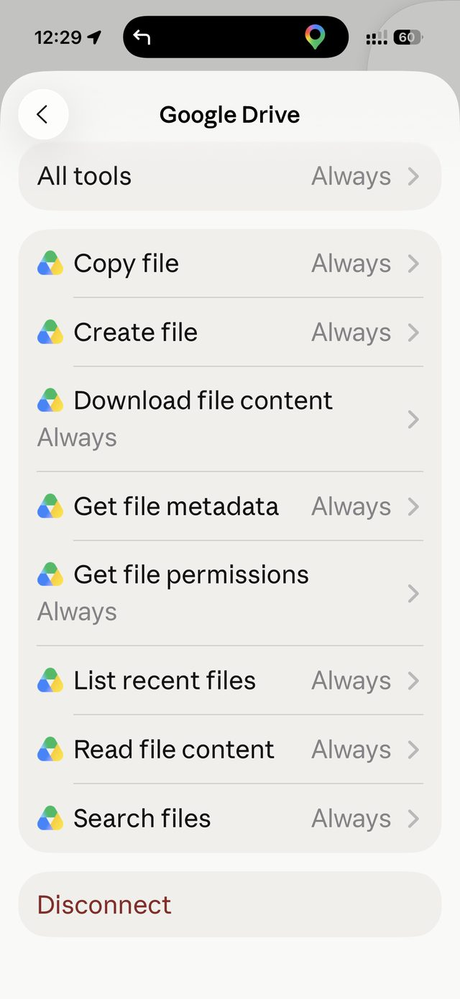

Every time I wanted my IBKR investment data updated, I sent Claude the same file — through a Google Drive link, then as a file attachment. Neither one stuck. Here's the one-time fix that means I never have to send it again. 每次我想更新我的IBKR投资数据，我都要把同一份文件重新发给Claude——先是用Google Drive链接，后来又用文件附件。两种方法都没能「留住」。这是一次性搞定的方法，让我以后再也不用重发。
I have a raw data file — my IBKR investment report — that changes every time I check my portfolio. Naturally, I wanted to just hand Claude the file and have it update my dashboards. I tried two ways:我有一份原始数据文件——我的IBKR投资报告——每次查看投资组合时都会更新。我自然想直接把文件交给Claude，让它更新我的仪表盘。我尝试了两种方式：
The real fix isn't a better way to "send" the file each time — it's giving Claude a standing connection to somewhere I already keep the file. Claude.ai has a Google Drive connector built in. Once it's authorized, Claude can look inside a folder in my own Drive whenever I ask — no link, no attachment, every single session, forever.真正的解决办法不是找到更好的「每次发送」方式——而是给Claude一个持续存在的连接，指向我原本就保存文件的地方。Claude.ai内置了Google Drive连接器。一旦获得授权，Claude就能在我每次询问时查看我Drive中的某个文件夹——不需要链接，不需要附件，每一次对话都能用，永久有效。
I made a folder in my Google Drive called "IBKR." Every time I export a new statement, I just save it into that same folder — overwrite the old one, or drop in a new one.我在Google Drive里建了一个叫「IBKR」的文件夹。每次导出新报表时，我都直接存进这个同一个文件夹——覆盖旧文件，或放一份新的进去。
The first time Claude tries to open a Drive file, your phone or browser may show a permission screen. Set every Drive action to "Always" so it never asks again. This has to be done through claude.ai's own Connector settings — typing "Yes" in the chat does not count, no matter how many times I tried it.Claude第一次尝试打开Drive文件时，手机或浏览器可能会弹出权限确认页面。把每一个Drive操作都设为「始终允许」（Always），这样以后就再也不会弹出询问了。这一步必须通过claude.ai自己的「连接器」设置页面完成——在聊天里打字回复「Yes」是不算数的，不管我试了多少次。
Once connected, I just say the phrase below. Claude finds the latest file in that folder itself, reads it, and updates the dashboard.连接好之后，我只需说出下面的短语。Claude会自己在文件夹中找到最新的文件，读取内容，并更新仪表盘。
or, just as good:或者，效果一样：
Either one tells Claude to go look, on its own, without me pasting anything. I've saved both phrases as a standing rule so any future session — notebook or phone — knows exactly what to do.这两句话中的任何一句，都能让Claude自己去查找，我什么都不需要粘贴。我已经把这两句短语存为固定规则，这样无论以后是在笔记本还是手机上开启新对话，Claude都清楚该怎么做。

The fix was never a better way to send the file. It was giving Claude a standing door into a room I already keep it in — opened once, left unlocked from then on.真正的解决办法从来不是找到更好的发送文件的方式，而是给Claude一扇通往我原本就存放文件的房间的常开的门——只需打开一次，此后便一直保持敞开。
This pattern isn't specific to investment data — it works for anything I'd otherwise keep re-sending: a health tracker export, a receipt I keep scanning, a spreadsheet I update weekly. The recipe is always the same three pieces:这个方法并不局限于投资数据——任何我原本需要不断重新发送的东西都适用：健康追踪导出数据、反复扫描的收据、每周更新的表格。方法始终是同样的三个要素：
One thing to know: if a Drive tool ever shows a permission error again mid-conversation, that's the connector needing re-authorization — Claude will tell you plainly instead of quietly retrying forever. The fix is always the same: claude.ai → Settings → Connectors → Google Drive.需要知道的一点：如果Drive工具在对话中再次出现权限错误，说明连接器需要重新授权——Claude会直接告诉你，而不是默默无限重试。解决办法始终一样：claude.ai → 设置 → 连接器 → Google Drive。
The payoff: once set up, I never touch the chat to "send" data again. I just update the file in Drive and say the phrase — from my phone, from anywhere, in any new conversation.回报：设置完成后，我再也不需要在聊天中「发送」数据了。我只需在Drive中更新文件，然后说出那句短语——无论用手机、在哪里、开启哪个新对话都一样。
This article is part of my AI Tools series — practical guides for using AI technology in everyday life, written from the perspective of a 70-year-old beginner who is learning as he goes. 本文是我AI工具系列的一部分——从一个边学边做的70岁初学者的角度，撰写的关于在日常生活中使用AI技术的实用指南。